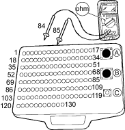

DTC P0117: ECT Sensor Circuit Low Voltage
- Check the ''On Board Diagnostic (OBD) System Check''.
Was the ''OBD System Check'' performed?
YES – Go to step 2.
NO – Go to OBD System Check. 
- Turn the ignition switch ON (II).
- Check the ECT with the scan tool.
Is about 140°C (284°F) indicated?
YES – Go to step 4.
NO – Go to step 9.
- Disconnect the ECT sensor 2P connector.
- Check the ECT with the scan tool.
Is about 215°C (419°F) indicated?
YES – Replace the ECT sensor.
NO – Go to step 6.
- Turn the ignition switch OFF.
- Disconnect ECM connector.
- Check the ECT sensor signal circuit for a short to ground.

Is a problem found?
YES – Repair the ECT signal circuit.
NO – Substitute a known-good ECM and recheck. If symptom/indication goes away, replace the original ECM.
- Check the temperature reading on the scan tool.
Be aware that if the engine is warm, the reading will be higher than ambient temperature.
If the engine is cold, the IAT and ECT will have the same value.
Is the correct ambient temperature indicated?
YES – Intermittent failure, system is OK at this time. Check for poor connections or loose wires at the ECT sensor and at the ECM.
NO – Replace the ECT sensor.